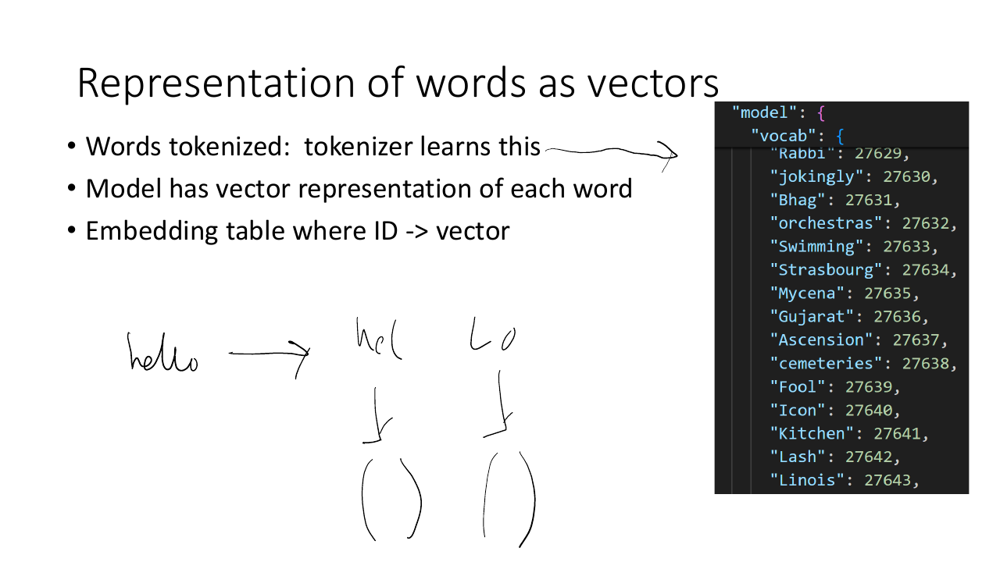
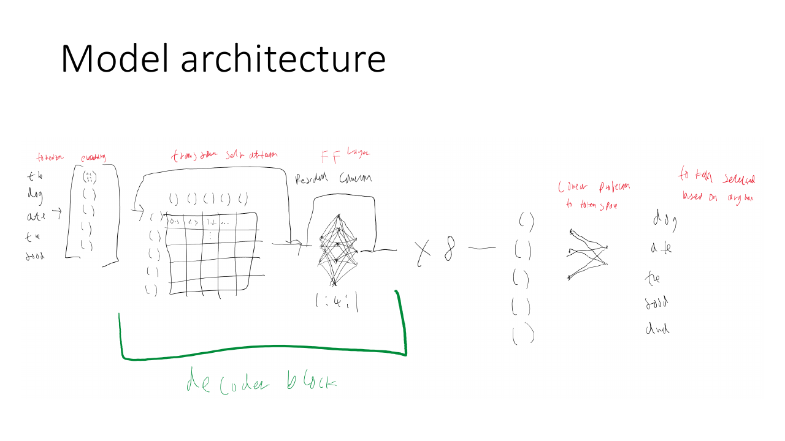
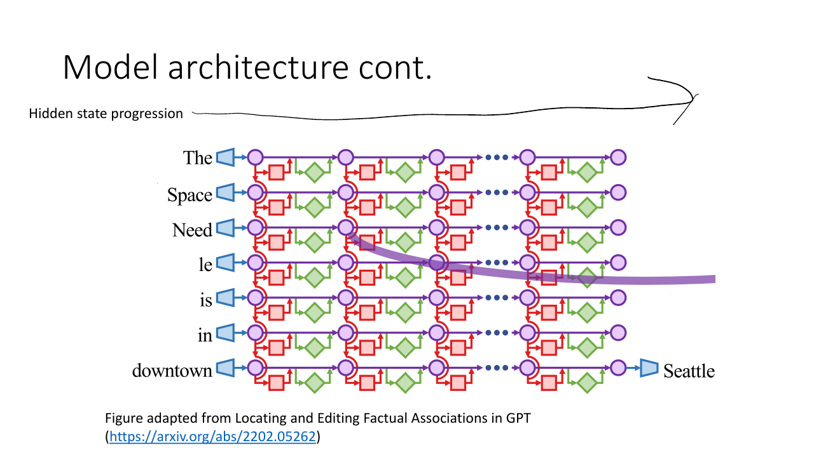
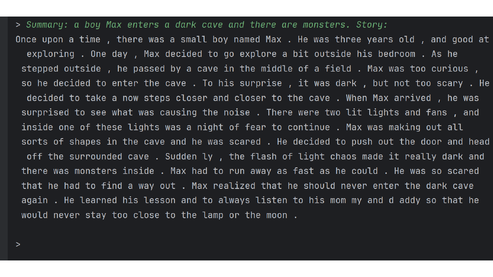
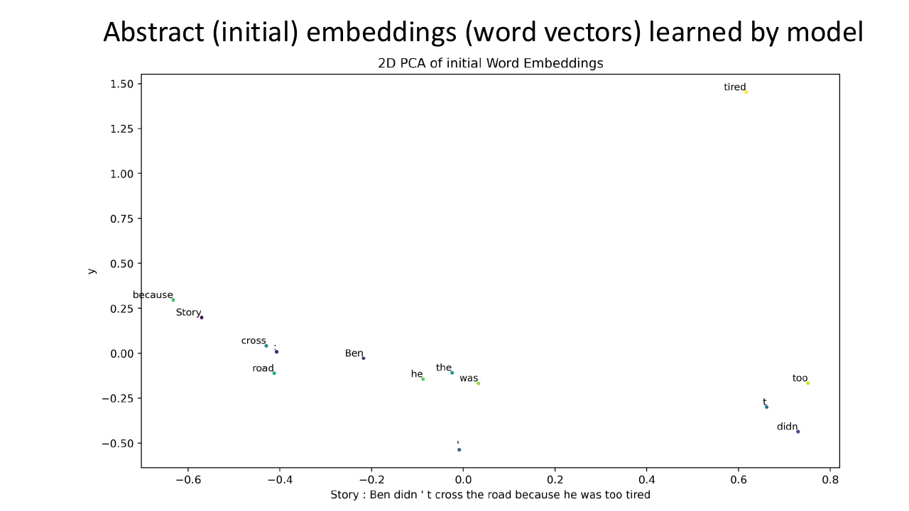
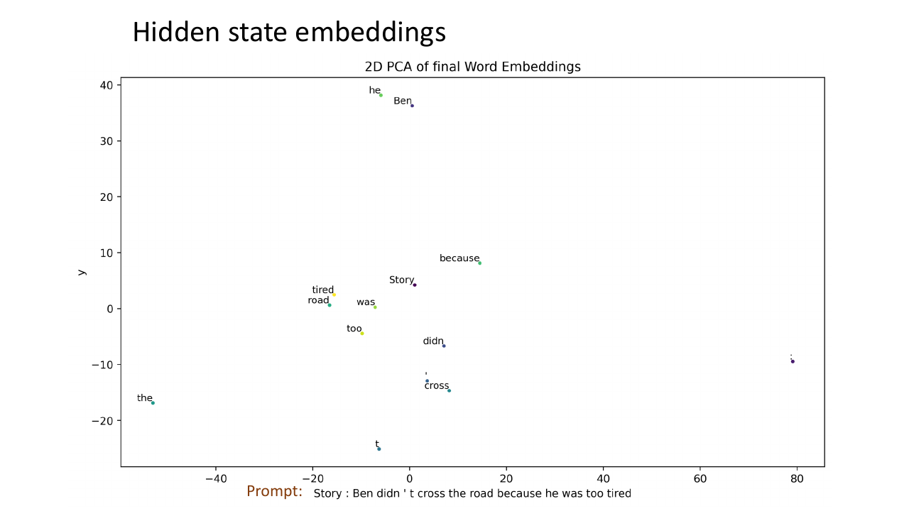
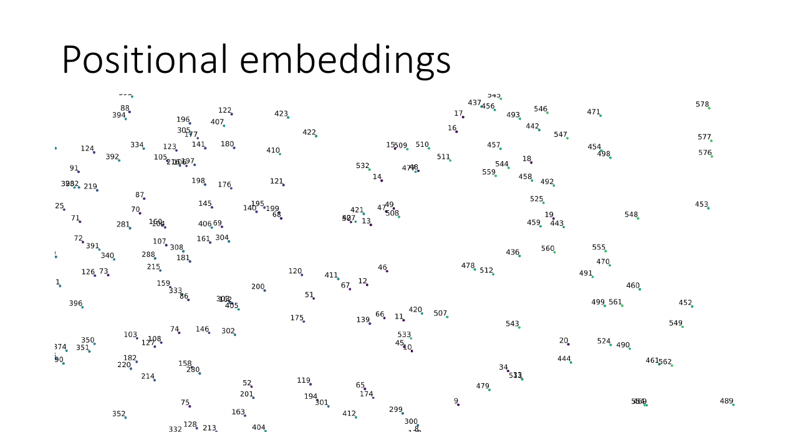
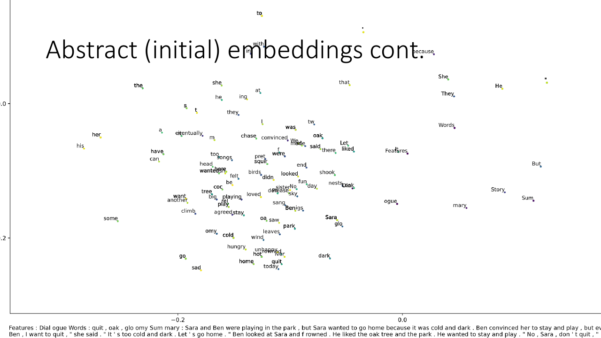
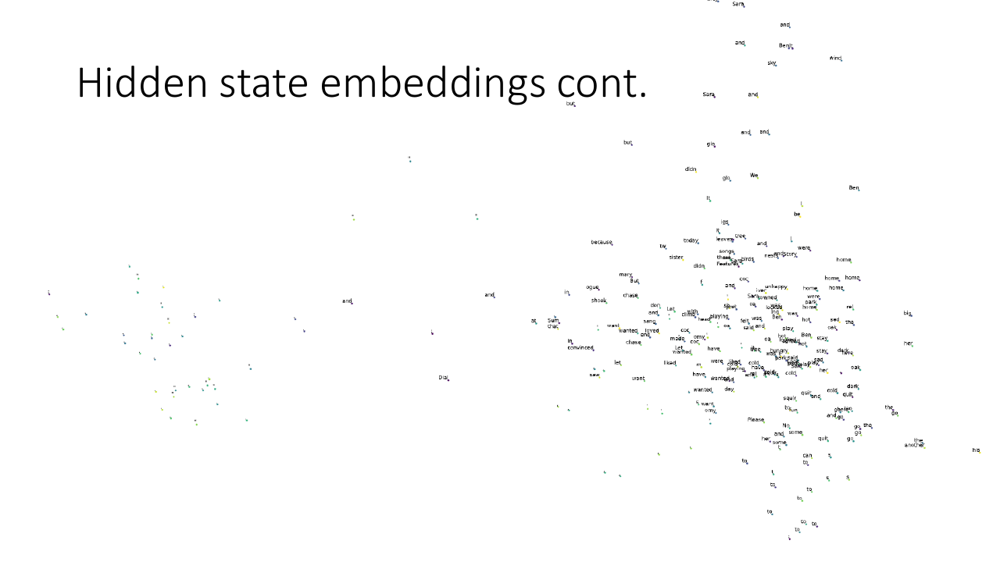

Building an LLM from scratch
Note
These are my slides from a talk on building a small language model from scratch and then looking inside it. They were presented with live annotation, so the slides are reproduced here as they were drawn on.
1Representation of words as vectors
- Words tokenized: the tokenizer learns this
- Model has a vector representation of each word
- Embedding table where ID → vector

hello becomes a pair of tokens and
each token becomes a vector.2Model architecture
The model is 14.5 million parameters.

Hidden state progression

3Model training
Because of the model’s small parameter size, training becomes very different, as it is very underfit. Additionally, there is the issue of how to train the model for instruction following. I tried training on datasets like Wikipedia, but was unable to make progress as Wikipedia was too diverse and requires too much memorization. I ended up training on the TinyStories dataset instead. This is a synthetic dataset of simple childrens stories designed for small models, with built in instruction following.

4Abstract (initial) embeddings (word vectors) learned by model
In this section, we now analyse the models’ learned representations. The initial positional embeddings show the models learn representations of words in their abstract context, as in the vector that each word represents. The image below shows the vectors of the words after they have been passed through the model. Here, you can see the attention mechanism at work, because ‘he’ and ‘Ben’ refer to the same object. The model has learned this, and so the word vectors are similar, hence closer together.


5Positional embeddings

6Hidden state embeddings continued
Here we analyse the model’s learned representations again, but for a larger sentence.

